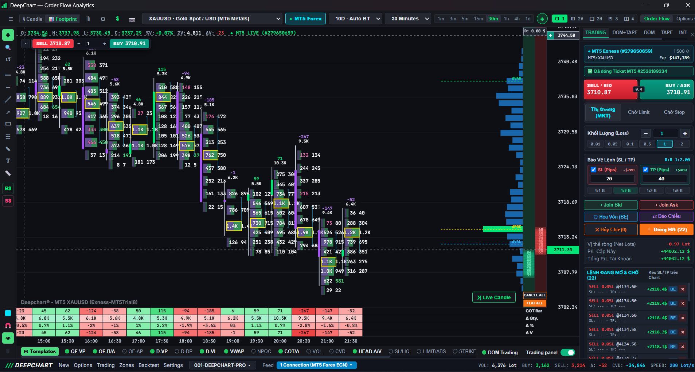

01 / ĐỘNG CƠ THỰC THI
01 / CORE RUNTIME
01
Động cơ Đồng thời Độ chính xác cao High-Precision Concurrency Engine
Môi trường thực thi bất đồng bộ Tokio đa luồng với đường ống kênh truyền không khóa. Giải quyết triệt để sai số làm tròn số thực dấu phẩy động bằng việc áp dụng số nguyên tỉ lệ cố định cho mọi phép tính khối lượng giao dịch. Multi-threaded async Tokio runtime with non-blocking channel pipelining. Solves floating-point inaccuracy by enforcing exact fixed-point arithmetic across all financial volume calculations.

- Tính toán khối lượng bằng số nguyên tỉ lệ cố định, loại trừ hoàn toàn sai số tích lũy trên từng tick dữ liệu. Zero-float volume accounting via rust_decimal to eliminate rounding errors in aggregate ticks.
- Hàng đợi Ring Buffer độ trễ thấp xử lý hơn 18.000 cập nhật tick mỗi giây. Low-latency ring buffer queues processing over 18,000 tick updates per second.
- Kiểm soát ngân sách bộ nhớ chặt chẽ, hoàn toàn không có độ trễ dọn rác (No GC pauses). Fine-grained memory budgeting with zero garbage collection pauses.